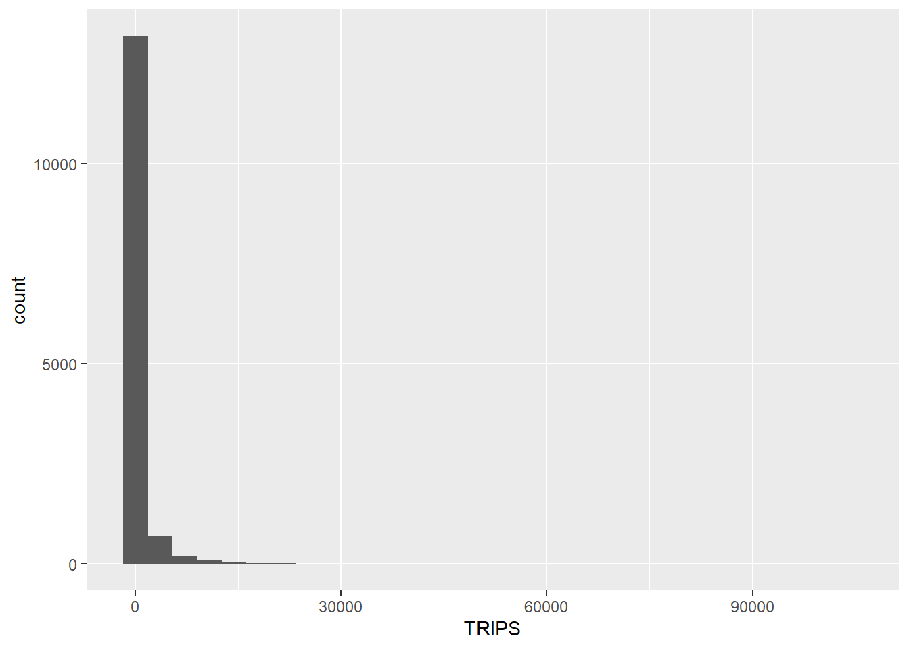
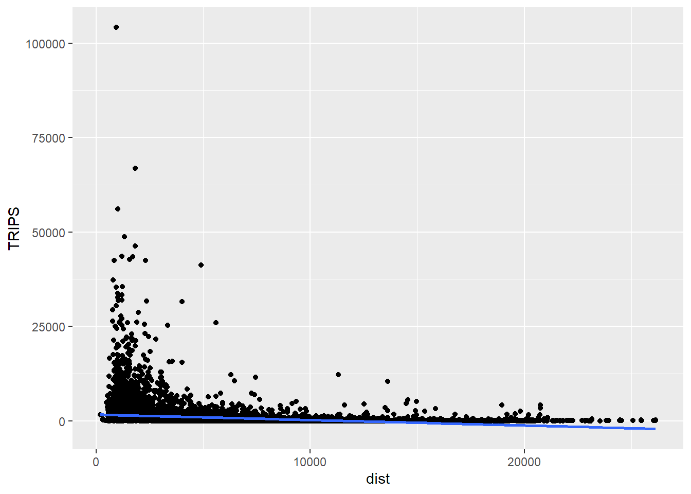
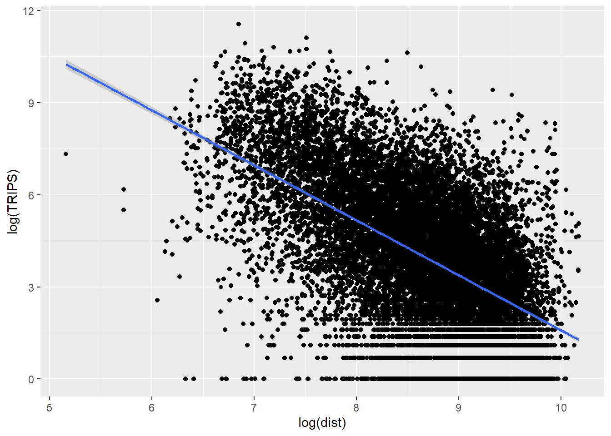
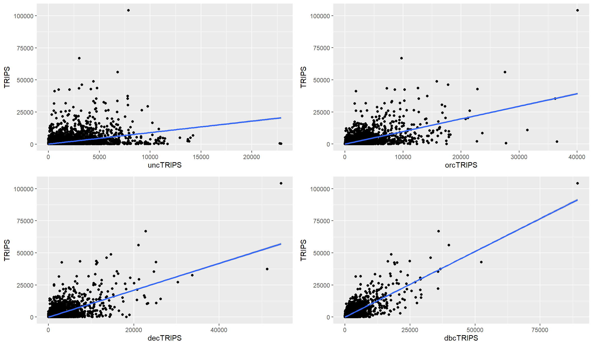

pacman::p_load(tmap, sf, sp,
performance, reshape2,
ggpubr, tidyverse)Hands-on Exercise 11 - Week 12: Calibrating Spatial Interaction Models with R
Overview
Spatial Interaction Models (SIMs) are mathematical models for estimating flows between spatial entities developed by Alan Wilson in the late 1960s and early 1970, with considerable uptake and refinement for transport modelling since then Boyce and Williams (2015).
There are four main types of traditional SIMs (Wilson 1971):
Unconstrained
Production-constrained
Attraction-constrained
Doubly-constrained
Ordinary least square (OLS), log-normal, Poisson and negative binomial (NB) regression methods have been used extensively to calibrate OD flow models by processing flow data as different types of dependent variables. In this chapter, you will gain hands-on experiences on using appropriate R packages to calibrate SIM by using there four regression methods.
Learning outcome
In this exercise, we are going to calibrate SIM to determine factors affecting the public bus passenger flows during the morning peak in Singapore.
The Data
This exercise is a continuation of Chapter 15: Processing and Visualising Flow Data and the following data will be used:
od_data.rds, weekday morning peak passenger flows at planning subzone level.
mpsz.rds, URA Master Plan 2019 Planning Subzone boundary in simple feature tibble data frame format.
Beside these two data sets, an additional attribute data file called pop.csv will be provided. It
Installing and Loading R packages
For the purpose of this exercise, four r packages will be used. They are:
sf for importing, integrating, processing and transforming geospatial data.
tidyverse for importing, integrating, wrangling and visualising data.
tmap for creating thematic maps.
Computing Distance Matrix
In spatial interaction, a distance matrix is a table that shows the distance between pairs of locations. For example, in the table below we can see an Euclidean distance of 3926.0025 between MESZ01 and RVSZ05, of 3939.1079 between MESZ01 and SRSZ01, and so on. By definition, an location’s distance from itself, which is shown in the main diagonal of the table, is 0.

In this section, you will learn how to compute a distance matrix by using URA Master Plan 2019 Planning Subzone boundary in which you saved as an rds file called mpsz.
First, let us import mpsz.rds into R environemnt by using the code chunk below.
mpsz <- read_rds("./data/rds/mpsz.rds")
mpszConverting from sf data.table to SpatialPolygonsDataFrame
There are at least two ways to compute the required distance matrix. One is based on sf and the other is based on sp. Past experience shown that computing distance matrix by using sf function took relatively longer time that sp method especially the data set is large. In view of this, sp method is used in the code chunks below.
First as.Spatial() will be used to convert mpsz from sf tibble data frame to SpatialPolygonsDataFrame of sp object as shown in the code chunk below.
mpsz_sp <- as(mpsz, "Spatial")
mpsz_spComputing the distance matrix
Next, spDists() of sp package will be used to compute the Euclidean distance between the centroids of the planning subzones.
dist <- spDists(mpsz_sp,
longlat = FALSE)head(dist, n=c(10, 10))Notice that the output dist is a matrix object class of R. Also notice that the column heanders and row headers are not labeled with the planning subzone codes.
Labelling column and row heanders of a distance matrix
First, we will create a list sorted according to the the distance matrix by planning sub-zone code.
sz_names <- mpsz$SUBZONE_CNext we will attach SUBZONE_C to row and column for distance matrix matching ahead
colnames(dist) <- paste0(sz_names)
rownames(dist) <- paste0(sz_names)Pivoting distance value by SUBZONE_C
Next, we will pivot the distance matrix into a long table by using the row and column subzone codes as show in the code chunk below.
distPair <- melt(dist) %>%
rename(dist = value)
head(distPair, 10)Notice that the within zone distance is 0.
Updating intra-zonal distances
In this section, we are going to append a constant value to replace the intra-zonal distance of 0.
First, we will select and find out the minimum value of the distance by using summary().
distPair %>%
filter(dist > 0) %>%
summary()Next, a constant distance value of 50m is added into intra-zones distance.
distPair$dist <- ifelse(distPair$dist == 0,
50, distPair$dist)The code chunk below will be used to check the result data.frame.
distPair %>%
summary()The code chunk below is used to rename the origin and destination fields.
distPair <- distPair %>%
rename(orig = Var1,
dest = Var2)Lastly, the code chunk below is used to save the dataframe for future use.
write_rds(distPair, "chap16/data/rds/distPair.rds") distPair <- read_rds("chap16/data/rds/distPair.rds")Preparing flow data
The code chunk below is used import od_data save in Chapter 15 into R environment.
od_data_fii <- read_rds("chap15/data/rds/od_data_fii.rds")Next, we will compute the total passenger trip between and within planning subzones by using the code chunk below. The output is all flow_data
flow_data <- od_data_fii %>%
group_by(ORIGIN_SZ, DESTIN_SZ) %>%
summarize(TRIPS = sum(MORNING_PEAK)) Use the code chunk below to display flow_data dataframe.
head(flow_data, 10)Separating intra-flow from passenger volume df
Code chunk below is used to add three new fields in flow_data dataframe.
flow_data$FlowNoIntra <- ifelse(
flow_data$ORIGIN_SZ == flow_data$DESTIN_SZ,
0, flow_data$TRIPS)
flow_data$offset <- ifelse(
flow_data$ORIGIN_SZ == flow_data$DESTIN_SZ,
0.000001, 1)Combining passenger volume data with distance value
Before we can join flow_data and distPair, we need to convert data value type of ORIGIN_SZ and DESTIN_SZ fields of flow_data dataframe into factor data type.
flow_data$ORIGIN_SZ <- as.factor(flow_data$ORIGIN_SZ)
flow_data$DESTIN_SZ <- as.factor(flow_data$DESTIN_SZ)Now, left_join() of dplyr will be used to flow_data dataframe and distPair dataframe. The output is called flow_data1.
flow_data1 <- flow_data %>%
left_join (distPair,
by = c("ORIGIN_SZ" = "orig",
"DESTIN_SZ" = "dest"))Preparing Origin and Destination Attributes
Importing population data
pop <- read_csv("chap16/data/aspatial/pop.csv")Geospatial data wrangling
pop <- pop %>%
left_join(mpsz,
by = c("PA" = "PLN_AREA_N",
"SZ" = "SUBZONE_N")) %>%
select(1:6) %>%
rename(SZ_NAME = SZ,
SZ = SUBZONE_C)Preparing origin attribute
flow_data1 <- flow_data1 %>%
left_join(pop,
by = c(ORIGIN_SZ = "SZ")) %>%
rename(ORIGIN_AGE7_12 = AGE7_12,
ORIGIN_AGE13_24 = AGE13_24,
ORIGIN_AGE25_64 = AGE25_64) %>%
select(-c(PA, SZ_NAME))Preparing destination attribute
flow_data1 <- flow_data1 %>%
left_join(pop,
by = c(DESTIN_SZ = "SZ")) %>%
rename(DESTIN_AGE7_12 = AGE7_12,
DESTIN_AGE13_24 = AGE13_24,
DESTIN_AGE25_64 = AGE25_64) %>%
select(-c(PA, SZ_NAME))We will called the output data file SIM_data. it is in rds data file format.
write_rds(flow_data1, "chap16/data/rds/flow_data_6-9.rds")Calibrating Spatial Interaction Models
In this section, you will learn how to calibrate Spatial Interaction Models by using Poisson Regression method.
Importing the modelling data
Firstly, let us import the modelling data by using the code chunk below.
SIM_data <- read_rds("chap16/data/rds/SIM_data.rds")Visualising the dependent variable
Firstly, let us plot the distribution of the dependent variable (i.e. TRIPS) by using histogram method by using the code chunk below.
ggplot(data = SIM_data,
aes(x = TRIPS)) +
geom_histogram()
Notice that the distribution is highly skewed and not resemble bell shape or also known as normal distribution.
Next, let us visualise the relation between the dependent variable and one of the key independent variable in Spatial Interaction Model, namely distance.
ggplot(data = SIM_data,
aes(x = dist,
y = TRIPS)) +
geom_point() +
geom_smooth(method = lm)
Notice that their relationship hardly resemble linear relationship.
On the other hand, if we plot the scatter plot by using the log transformed version of both variables, we can see that their relationship is more resemble linear relationship.
ggplot(data = SIM_data,
aes(x = log(dist),
y = log(TRIPS))) +
geom_point() +
geom_smooth(method = lm)
Checking for variables with zero values
Since Poisson Regression is based of log and log 0 is undefined, it is important for us to ensure that no 0 values in the explanatory variables.
In the code chunk below, summary() of Base R is used to compute the summary statistics of all variables in SIM_data data frame
summary(SIM_data)The print report above reveals that variables ORIGIN_AGE7_12, ORIGIN_AGE13_24, ORIGIN_AGE25_64,DESTIN_AGE7_12, DESTIN_AGE13_24, DESTIN_AGE25_64 consist of 0 values.
In view of this, code chunk below will be used to replace zero values to 0.99.
SIM_data$DESTIN_AGE7_12 <- ifelse(
SIM_data$DESTIN_AGE7_12 == 0,
0.99, SIM_data$DESTIN_AGE7_12)
SIM_data$DESTIN_AGE13_24 <- ifelse(
SIM_data$DESTIN_AGE13_24 == 0,
0.99, SIM_data$DESTIN_AGE13_24)
SIM_data$DESTIN_AGE25_64 <- ifelse(
SIM_data$DESTIN_AGE25_64 == 0,
0.99, SIM_data$DESTIN_AGE25_64)
SIM_data$ORIGIN_AGE7_12 <- ifelse(
SIM_data$ORIGIN_AGE7_12 == 0,
0.99, SIM_data$ORIGIN_AGE7_12)
SIM_data$ORIGIN_AGE13_24 <- ifelse(
SIM_data$ORIGIN_AGE13_24 == 0,
0.99, SIM_data$ORIGIN_AGE13_24)
SIM_data$ORIGIN_AGE25_64 <- ifelse(
SIM_data$ORIGIN_AGE25_64 == 0,
0.99, SIM_data$ORIGIN_AGE25_64)You can run the summary() again.
summary(SIM_data)Notice that all the 0 values have been replaced by 0.99.
Unconstrained Spatial Interaction Model
In this section, you will learn how to calibrate an unconstrained spatial interaction model by using glm() of Base Stats. The explanatory variables are origin population by different age cohort, destination population by different age cohort (i.e. ORIGIN_AGE25_64) and distance between origin and destination in km (i.e. dist).
The general formula of Unconstrained Spatial Interaction Model

The code chunk used to calibrate to model is shown below:
uncSIM <- glm(formula = TRIPS ~
log(ORIGIN_AGE25_64) +
log(DESTIN_AGE25_64) +
log(dist),
family = poisson(link = "log"),
data = SIM_data,
na.action = na.exclude)
uncSIMR-squared function
In order to measure how much variation of the trips can be accounted by the model we will write a function to calculate R-Squared value as shown below.
CalcRSquared <- function(observed,estimated){
r <- cor(observed,estimated)
R2 <- r^2
R2
}Next, we will compute the R-squared of the unconstrained SIM by using the code chunk below.
CalcRSquared(uncSIM$data$TRIPS, uncSIM$fitted.values)r2_mcfadden(uncSIM)Origin (Production) constrained SIM
In this section, we will fit an origin constrained SIM by using the code3 chunk below.
The general formula of Origin Constrained Spatial Interaction Model

orcSIM <- glm(formula = TRIPS ~
ORIGIN_SZ +
log(DESTIN_AGE25_64) +
log(dist),
family = poisson(link = "log"),
data = SIM_data,
na.action = na.exclude)
summary(orcSIM)We can examine how the constraints hold for destinations this time.
CalcRSquared(orcSIM$data$TRIPS, orcSIM$fitted.values)Destination constrained
In this section, we will fit a destination constrained SIM by using the code chunk below.
The general formula of Destination Constrained Spatial Interaction Model

decSIM <- glm(formula = TRIPS ~
DESTIN_SZ +
log(ORIGIN_AGE25_64) +
log(dist),
family = poisson(link = "log"),
data = SIM_data,
na.action = na.exclude)
summary(decSIM)We can examine how the constraints hold for destinations this time.
CalcRSquared(decSIM$data$TRIPS, decSIM$fitted.values)Doubly constrained
In this section, we will fit a doubly constrained SIM by using the code chunk below.
The general formula of Doubly Constrained Spatial Interaction Model

dbcSIM <- glm(formula = TRIPS ~
ORIGIN_SZ +
DESTIN_SZ +
log(dist),
family = poisson(link = "log"),
data = SIM_data,
na.action = na.exclude)
summary(dbcSIM)We can examine how the constraints hold for destinations this time.
CalcRSquared(dbcSIM$data$TRIPS, dbcSIM$fitted.values)Notice that there is a relatively greater improvement in the R^2 value.
Model comparison
Another useful model performance measure for continuous dependent variable is Root Mean Squared Error. In this sub-section, you will learn how to use compare_performance() of performance package
First of all, let us create a list called model_list by using the code chun below.
model_list <- list(unconstrained=uncSIM,
originConstrained=orcSIM,
destinationConstrained=decSIM,
doublyConstrained=dbcSIM)Next, we will compute the RMSE of all the models in model_list file by using the code chunk below.
compare_performance(model_list,
metrics = "RMSE")# Comparison of Model Performance Indices
Name | Model | RMSE
-----------------------------------------
unconstrained | glm | 2429.978
originConstrained | glm | 2057.579
destinationConstrained | glm | 1891.724
doublyConstrained | glm | 1487.111The print above reveals that doubly constrained SIM is the best model among all the four SIMs because it has the smallest RMSE value of 1487.111.
Visualising fitted values
In this section, you will learn how to visualise the observed values and the fitted values.
Firstly we will extract the fitted values from each model by using the code chunk below.
df <- as.data.frame(uncSIM$fitted.values) %>%
round(digits = 0)Next, we will join the values to SIM_data data frame.
SIM_data <- SIM_data %>%
cbind(df) %>%
rename(uncTRIPS = "uncSIM$fitted.values")Repeat the same step by for Origin Constrained SIM (i.e. orcSIM)
df <- as.data.frame(orcSIM$fitted.values) %>%
round(digits = 0)SIM_data <- SIM_data %>%
cbind(df) %>%
rename(orcTRIPS = "orcSIM$fitted.values")Repeat the same step by for Destination Constrained SIM (i.e. decSIM)
df <- as.data.frame(decSIM$fitted.values) %>%
round(digits = 0)SIM_data <- SIM_data %>%
cbind(df) %>%
rename(decTRIPS = "decSIM$fitted.values")Repeat the same step by for Doubly Constrained SIM (i.e. dbcSIM)
df <- as.data.frame(dbcSIM$fitted.values) %>%
round(digits = 0)SIM_data <- SIM_data %>%
cbind(df) %>%
rename(dbcTRIPS = "dbcSIM$fitted.values")unc_p <- ggplot(data = SIM_data,
aes(x = uncTRIPS,
y = TRIPS)) +
geom_point() +
geom_smooth(method = lm)
orc_p <- ggplot(data = SIM_data,
aes(x = orcTRIPS,
y = TRIPS)) +
geom_point() +
geom_smooth(method = lm)
dec_p <- ggplot(data = SIM_data,
aes(x = decTRIPS,
y = TRIPS)) +
geom_point() +
geom_smooth(method = lm)
dbc_p <- ggplot(data = SIM_data,
aes(x = dbcTRIPS,
y = TRIPS)) +
geom_point() +
geom_smooth(method = lm)Now, we will put all the graphs into a single visual for better comparison by using the code chunk below.
ggarrange(unc_p, orc_p, dec_p, dbc_p,
ncol = 2,
nrow = 2)
Reflections/Personal Take
The unconstrained model seems the most interesting out of the 4 models since it seems to add more volatility to the observations but might be the most accurate of all the 4.
Reference
- https://r4gdsa.netlify.app/chap16.html